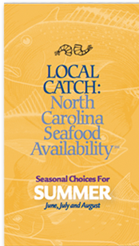

Upcoming Events
View Event Calendar
Seafood Throwdown Set For 2 PM Saturday, September 17, 2016
The freshness and flavor of our seafood inspires chefs and home cooks alike. During Day at the Docks there are several small...
READ MORE
Piedmont brings the Lowcountry & Bayou together for a celebration of NC Shrimp
On August 24th, Piedmont’s new Executive Chef John May – formerly of Chef & The Farmer – welcomes Chef...
READ MORE
Seafood Throwdown Set For 2 PM Saturday, September 17, 2016
The freshness and flavor of our seafood inspires chefs and home cooks alike. During Day at the Docks there are several small...
READ MORE
Featured Media
View Media GalleryFeatured Media
View All News Articles
APR 20
Pied host a Late Spring Bacbecue with Sustainable NC Seafood
MAY 8
Aquaculture and Seafood Industry Education Day
SEP 20
Z. Smith Reynolds Foundation awards $40,000 to NC Catch
DEC 15
NCDEQ Secretary van der Vaart to Participate in NC Catch Summit

What's Cooking?
Freshness comes from local waters and our friends at North Carolina Sea Grant have created a seafood availability guide featuring seasonal choices. Summer brings to North Carolina docks the world’s finest shrimp. And there’s plenty of finfish to round out seasonal menus.
Dining out? Be sure to ask your server for "Local Catch" selections.